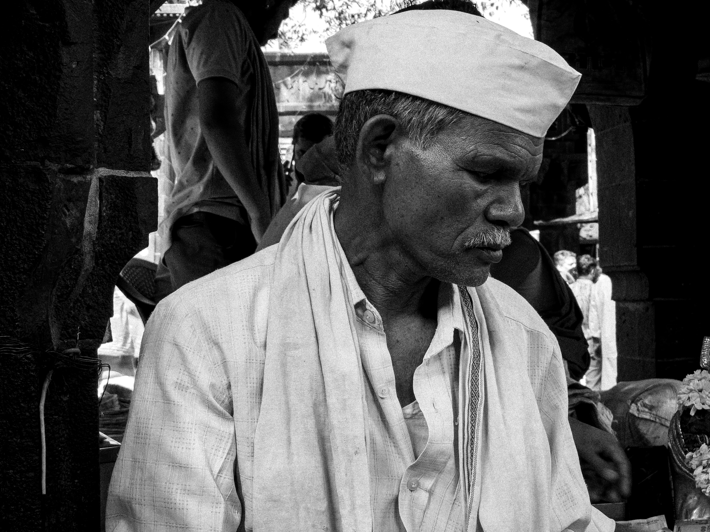
⌜ ⌟INSPECT
SHOT
The Elder of the Ghats
PORTRAIT / MONOCHROME
A GROWING ARCHIVE // 01
Things that make me stop: people, streets, bikes, cars, skies, architecture, travel, shadows, textures, and the unplanned moments in between. Captured on Samsung Galaxy S23 and graded for cinematic presence.

PORTRAIT / MONOCHROME
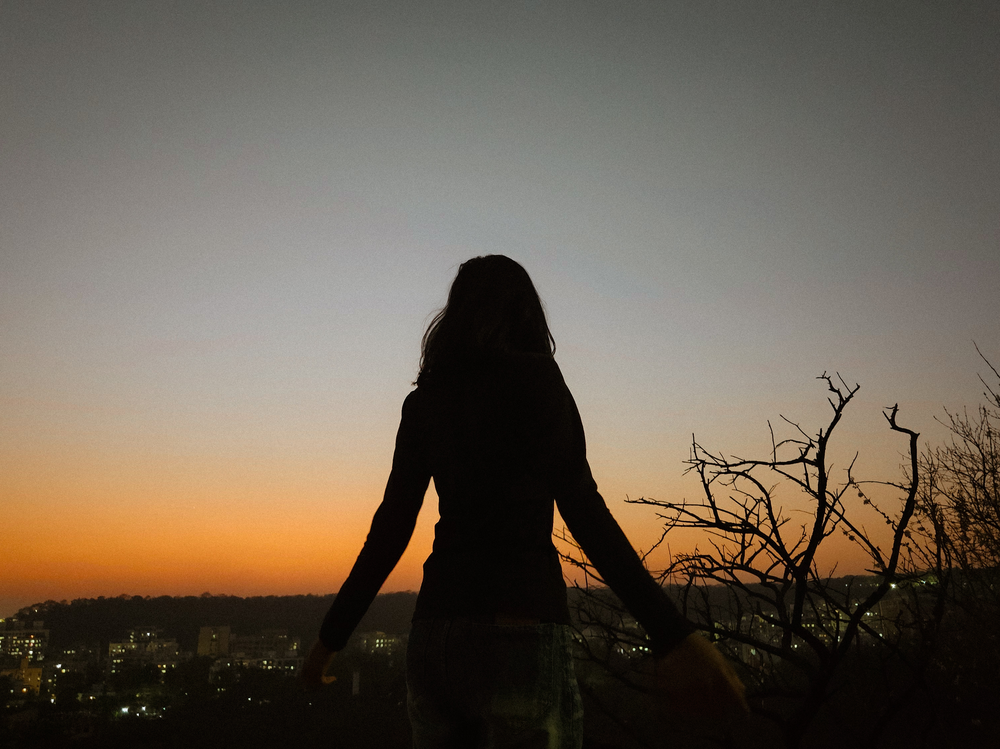
FORTS & LANDSCAPES
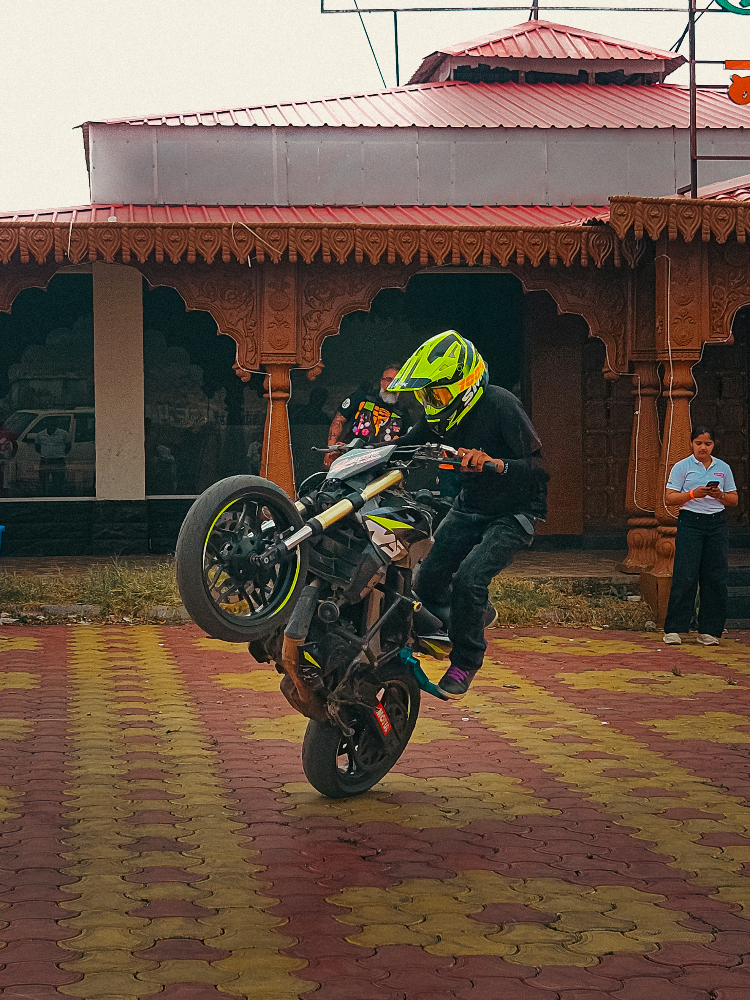
SPEED & MACHINES
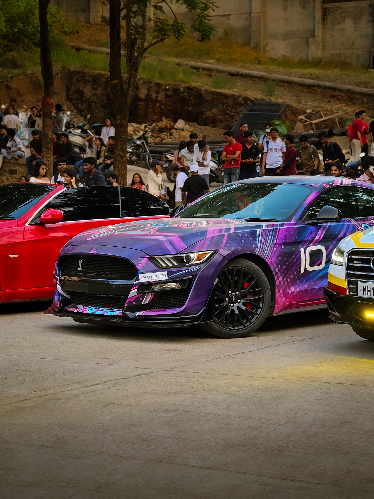
SPEED & MACHINES
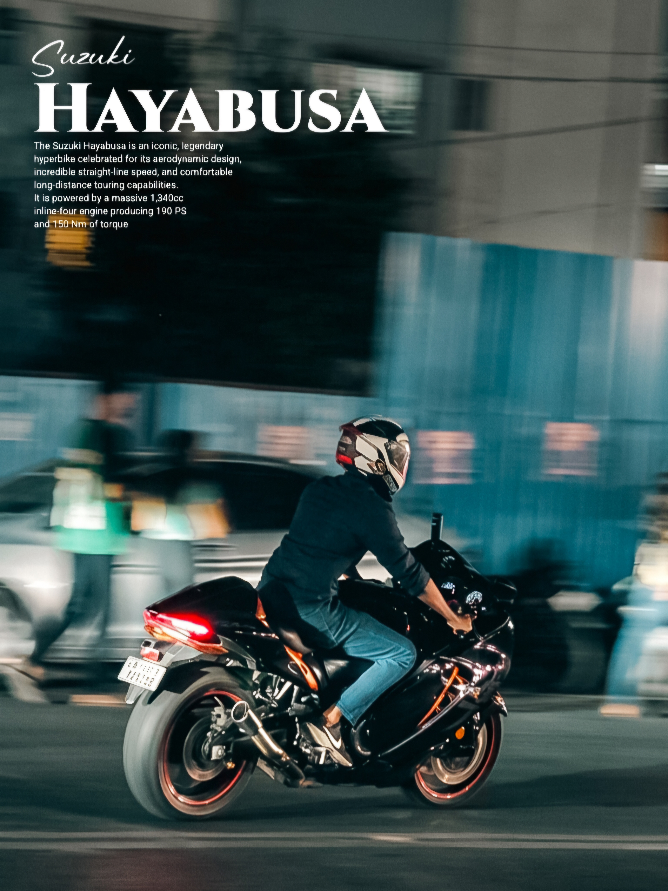
SPEED & MACHINES
FORTS & LANDSCAPES
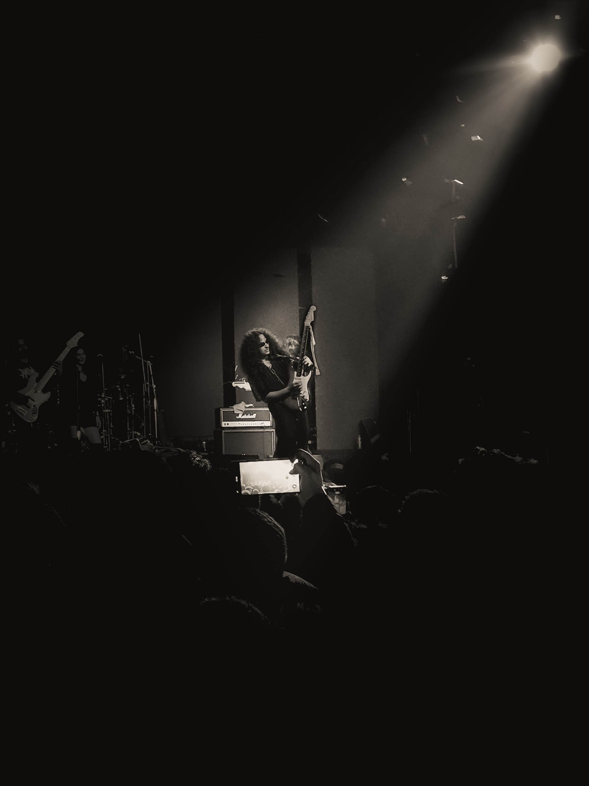
ATMOSPHERES & NIGHT
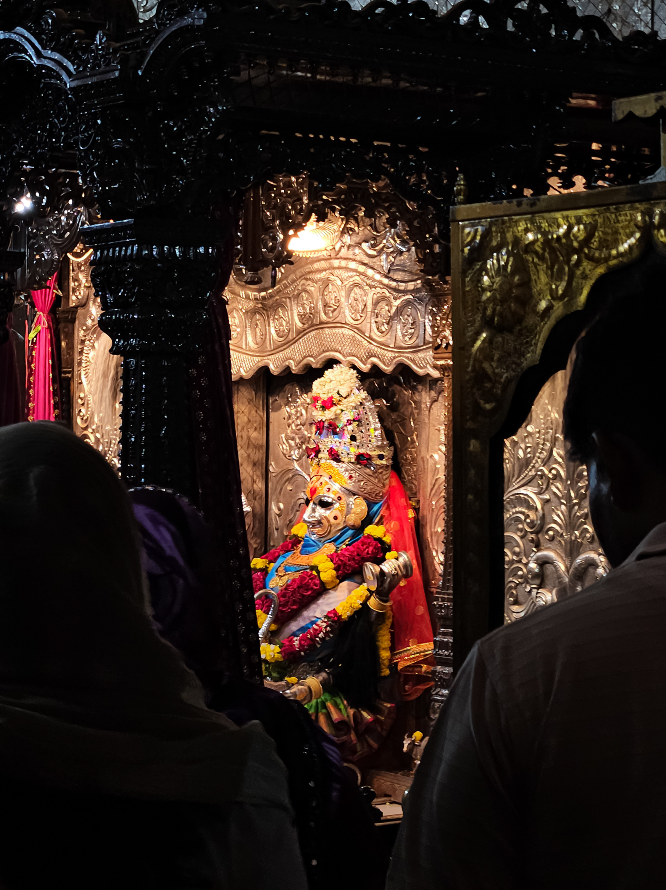
ATMOSPHERES & NIGHT
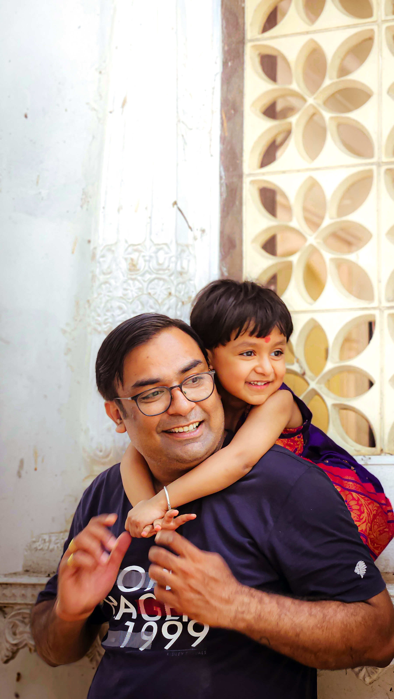
FORTS & LANDSCAPES
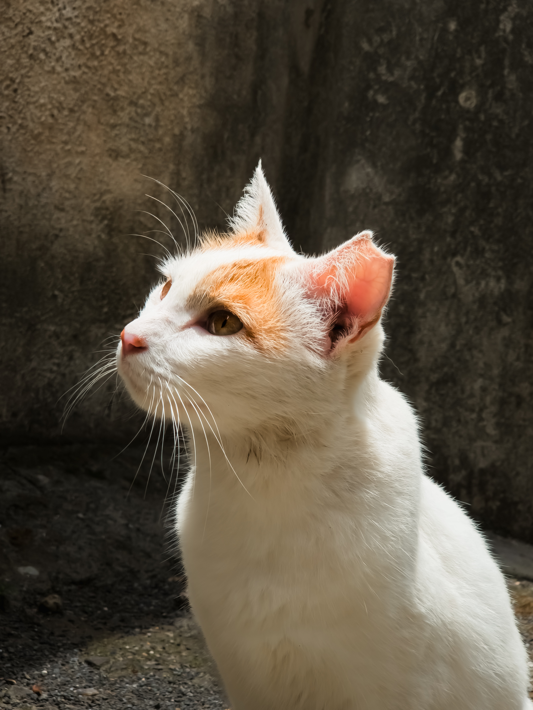
FORTS & LANDSCAPES
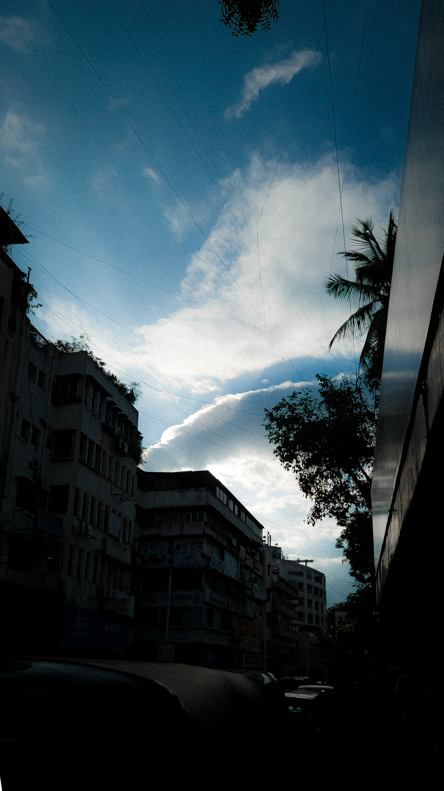
ATMOSPHERES & NIGHT
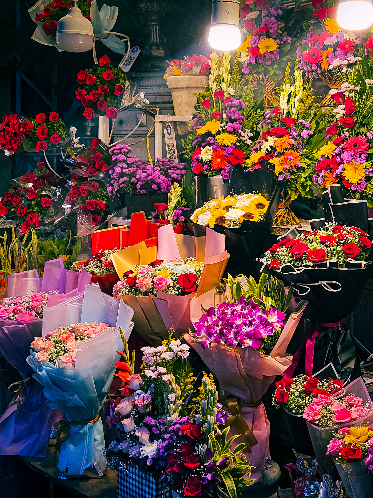
ATMOSPHERES & NIGHT
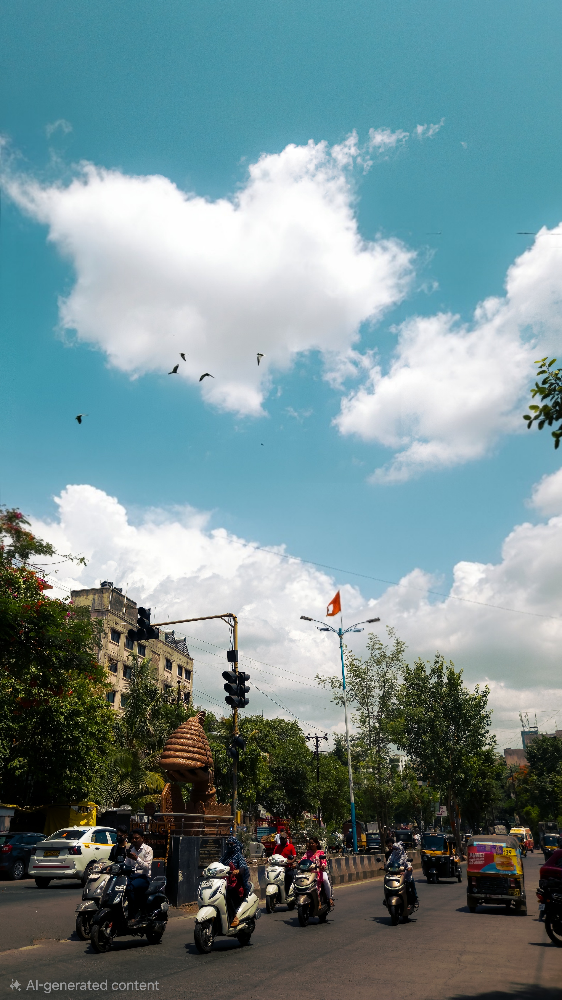
FORTS & LANDSCAPES
ATMOSPHERES & NIGHT
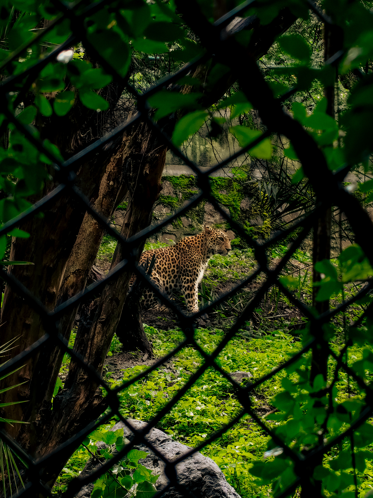
FORTS & LANDSCAPES
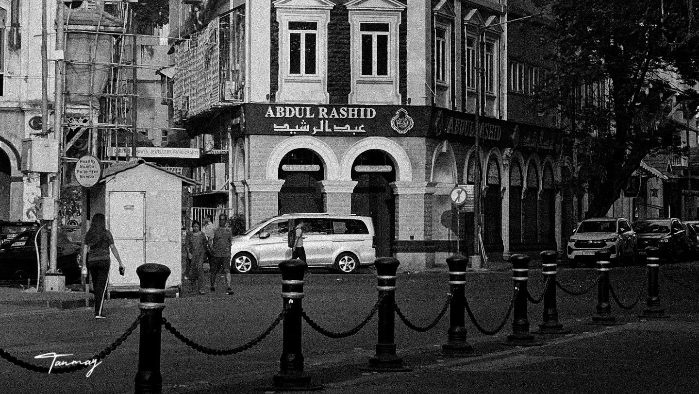
SPEED & MACHINES
Actionable systems to streamline coverage, reduce post-production chaos, and establish professional delivery timelines across all campus events.
Implement pre-event Shot-Lists & Coverage Run-of-Show. Assign explicit roles (Lead A-Cam for stage/speakers, B-Cam for crowd/candid emotion, Motion Cam for vertical reels) so no key moment is missed or duplicated.
Enforce a standardized folder hierarchy:
[YYYY-MM-DD]_[EventName]/01_RAW/02_SELECTS/03_FINAL_EXPORTS. Require an immediate
post-shoot dump to central drive with uniform naming syntax (e.g.
VCLICK_EVENT_STILL_001.JPG).
Replace scattered chats with event-specific channels. Use pinned briefing notes (schedule, contact person, priority deliverables) and async check-ins so shooters and editors are always synchronized.
Pair senior members with newer recruits for hands-on mentorship on live shoots. Run peer review sessions for reel edits before final export to cross-pollinate creative techniques.
Introduce a standardized Creative Requisition Form for other college clubs requesting Vclick coverage—requiring at least 48 hours notice, key event highlights, deliverable formats (Reel vs. Stills), and deadlines.
Adopt a tiered turnaround model: Fast-Track Reel (within 24 hours for peak event hype) + Curated Photo Suite (within 48–72 hours). Deliver via structured cloud links with web-optimized and print-ready folders.
How I view the role beyond title—as an active bridge between creative vision, team execution, and timely delivery.
Setting the visual standard across all outputs. Ensuring every reel has intentional pacing and every photo has clean framing, consistent colour treatment, and true emotional resonance.
Leading the crew during major campus fests and events. Ensuring gear preparedness, battery backups, coverage angles, and making real-time calls when schedules change.
Guiding the editing pipeline from raw footage to final render. Providing constructive feedback on cuts, colour grades, and transitions so the narrative feels cohesive rather than over-edited.
Mentoring teammates on mobile cinematography, Premiere Pro, and Lightroom workflows. Fostering a supportive culture where everyone is encouraged to experiment and build their individual style.
Direct mapping of my practical experience and technical skills to Vclick's growth areas.
Street & architectural composition, natural lighting, shadow play, and high-contrast monochrome studies. Mobile photography mastery with Samsung Galaxy S23 (Expert RAW, Pro Mode).
Cinematic 24 FPS movement, intentional slow pacing, gimbal-free fluid framing, and spontaneous real-time coverage during live events and travels.
Proficient in Adobe Premiere Pro, CapCut, and Adobe Lightroom. Strong focus on visual flow, colour grading for mood, and narrative storytelling without relying on generic transitions.
Understanding of typography, visual hierarchy, layout composition, moodboards, and pitch decks. Experience building this custom web portfolio from scratch.
Active creator managing @io.tanmay, @by_tanmay_, and @co0kedd_edits with an eye for visual feed coherence, engagement, and retention.
PHILOSOPHY & PROFILE // 02
I don't always go looking for a photograph. Sometimes I just find a frame that makes me stop.
I'm Tanmay Chavan, a 19-year-old engineering student at Vishwakarma Institute of Technology in Pune, with roots in Nagpur. I'm naturally talkative, social, and curious about people and the world around me—but behind the camera I slow down. I watch the light, the background, the timing, and the small details until the frame feels right.
What began with noticing roads, skies, bikes, cars, buildings, and random moments turned into photography—and then into videography and editing. I'm still figuring out my style, trying different subjects, pacing, colours, movement, and stories. That unfinished part is what makes the journey exciting.

CURRENT SETUP // 03
CREATIVITY STARTS WITH SEEING THE SHOT, NOT OWNING THE MOST EXPENSIVE CAMERA.
HOW I CREATE // 04
I like slow, minimal, meaningful videos—the kind that let you stay with a frame. I’m learning how pacing, colour, composition, and a few well-chosen transitions can make something feel more than complicated.
I’m not finished. I’m building my visual language one frame at a time.
— TANMAY CHAVANUsing the Samsung Galaxy S23 to find frames in spontaneous situations. Focusing on natural lighting, geometry, reflections, and perspective rather than waiting for ideal conditions.
Letting shots breathe. Resisting the urge to cut too quickly, giving viewers space to take in the surroundings, the atmosphere, and the emotion of the place.
Trying different pacing, colour grades, transitions, and storytelling approaches—always choosing what helps the moment rather than adding effects for their own sake.
I want to keep learning, experimenting, creating, and discovering my style—especially through travel films and commercial visual work that keep their personality.
CONTACT // 05
Have an idea, a place worth exploring, or just want to connect? Send me a message. I’m building, learning, and always happy to talk visuals, bikes, cars, travel, or a frame that caught your eye.
00:00 IST (UTC+05:30)
PUNE, INDIA / IST